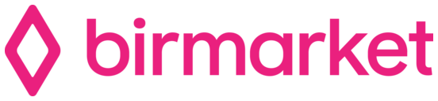

Bir məhsul fotosu → kartların tam kolleksiyası
Bir fotodan kart üçün altı şəkil alınır.
E-commerce üçün · Sİ
Bir ilkin fotodan Sİ marketplace-də məhsul kartı üçün şəkil dəsti yığır. Çoxlu məhsulu tez tərtib etməli olan mağazalar üçün uyğundur.
Bir fotodan kart üçün altı şəkil alınır.
01

Etsy-də mağazanı başlayarkən dərc üçün hər məhsula 10 şəkil generasiya edirəm.

BirMarket-də başlayarkən məhsul fotosessiyası aparır və məhsul kartları üçün fotoşəkillər generasiya edirəm.
02
03
Yalnız lazım olan işləri seçirsiniz: kartları ayrıca və ya mağazanın başladılması tərkibində müzakirə etmək olar.
Etsy-də mağazanın başladılması: birdəfəlik 500 ₼ və satışlardan komissiya. BirMarket-də: 200 ₼-dan, qiymət məhsulların sayından asılıdır.
Əlaqə
Pulsuz zəngdə kartların necə görünəcəyini göstərəcəyəm.
Kartları müzakirə edək ↗Və ya birbaşa yazın